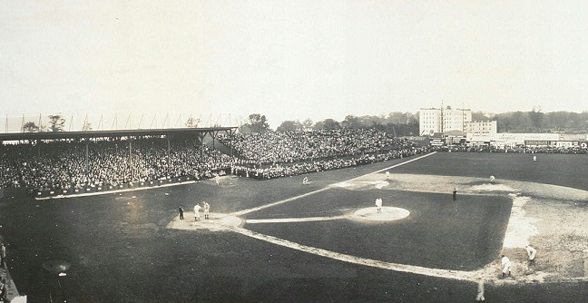

1936-1947A Transition

1936: Joltin' Joe
New York's 1936 season was Joe DiMaggio's first with the club. The young center fielder was signed in 1934 from the Pacific Coast League's San Francisco Seals, and made his debut with the Yankees in 1936, gaining an extra year's experience with the Seals. DiMaggio had a .323 batting average, 29 home runs, and 125 RBI in his rookie season. Gehrig won the AL MVP Award for his season, in which he hit a career-high 49 home runs, with a .354 batting average and 152 RBI. Behind these performances, the Yankees had a 102-win season and won the AL pennant, before defeating the Giants in the 1936 World Series, four games to two.[109] After a second consecutive 102-win regular season and AL championship in the 1937 season, the Yankees again defeated the Giants in the Series—this time winning 4–1.[110] The 1938 Yankees had 48 victories in 61 games during one stretch, and won the team's third straight AL championship despite a drop in batting performance by Gehrig. In the 1938 World Series, the Yankees swept the Chicago Cubs in four games. Ruppert died early in 1939; before his death, he sold his ownership interest to Barrow, who took over as the Yankees' president.[111] Financially, the club's position had improved from earlier in the decade; after posting a net loss of around $170,000 from 1931 to 1935, the team made over $1 million during the next four years.
1903: A move to New York
The ballpark for the New York team was constructed between 165th and 168th Streets, on Broadway in Manhattan.